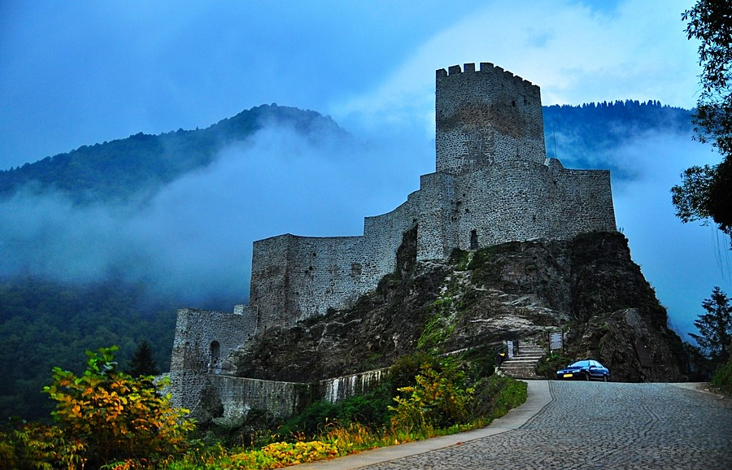

Rize Kalesi, sehir merkezinin güneybatısına kurulmuş bir kaledir. İç Kale ve Aşağı Kale olarak iki bölümü vardır. Yoğun yerleşme sebebiyle Aşağı Kale yok olmuştur. Batı tarafından bazı sur parçaları ve kuleleri günümüze gelebilmiştir.Kalenin tarihi tam olarak bilinmese de, Justinyen döneminde (527-565) iç kale kısmının yeniden inşa edildiği bilinmektedir.
